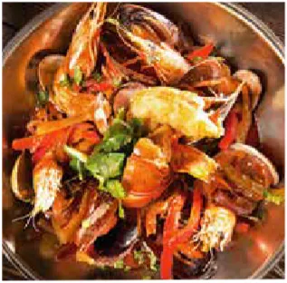

Kapitel 5 · Wein und Speisen kombinieren
Cataplana de Marisco

Die Cataplana ist ein Gericht, das in einem für die Algarve typischen Kochgefäß aus der arabischen Zeit zubereitet wird. Das portugiesische Gegenstück zur marokkanischen Tajine ist eine Art Metalltopf, ursprünglich aus Kupfer oder Messing, aus zwei gewölbten Teilen (Boden und Deckel), die ineinanderpassen. Normalerweise werden die Zutaten – meist Fisch und Meeresfrüchte, manchmal auch verschiedene Teile vom Schwein, dazu Gemüse wie Zwiebeln, verschiedene Gewürze und manchmal Kartoffeln – roh in die Cataplana gegeben und mit geschlossenem Deckel bei schwacher Hitze gegart.
Wein: Dazu passen gut feste, komplexe Weißweine, vollmundige Rosés und vielseitige Schaumweine. Ein Wein aus der Sorte Bical aus der Bairrada, ein Arinto aus Bucelas oder ein Negra Mole Rosado aus der Algarve sind ausgezeichnete Begleiter.
Erklärung: Tannin passt nicht zu Fisch. Deshalb sind leichte, frische Roséweine aus roten Trauben und fast alle Arten von Weißwein eine gute Wahl für dieses Gericht.